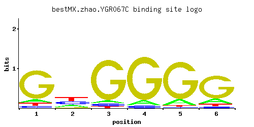

YGR067C
No recorded aliases
Function unknown
Best-performing DNA-binding model.

View and copy the recommended matrices ↘
A | 0.091 0.227 0.057 0.089 0.120 0.152 C | 0.055 0.339 0.049 0.051 0.023 0.051 G | 0.784 0.055 0.858 0.859 0.829 0.732 T | 0.070 0.378 0.036 0.001 0.028 0.064
A | 9 22 5 8 12 15 C | 5 33 4 5 2 5 G | 78 5 85 85 82 73 T | 7 37 3 0 2 6
A | -1.26 -0.34 -1.73 -1.28 -0.98 -0.74 C | -1.19 0.63 -1.30 -1.26 -2.06 -1.26 G | 1.47 -1.19 1.56 1.56 1.53 1.40 T | -1.52 0.17 -2.18 -5.77 -2.44 -1.61
Alternative candidate matrices 3
Historical matrix candidates from the original ScerTF database. Expand a source to inspect its original logo, scores, and matrix values.
YGR067CBadis et. al.P = 0.1719View matrix ↘
YGR067CFoat et. al.P = 1View matrix ↘
YGR067CZhu et. al.P = 1View matrix ↘
Gene-level annotations and interactions.
Genes bound in ChIP-chip experiments 27 genes
YBR276C, YBR278W, YDR026C, YGR042W, YGR182C, YHL047C, YHR118C, YHR119W, YJL014W, YJL016W, YJR030C, YJR140C, YJR141W, YKL047W, YKL048C, YKL197C, YLR125W, YLR293C, YLR319C, YLR320W, YMR004W, YOL136C, YOL137W, YOL138C, YPL001W, YPL002C, YPR019W
Genes affected by TF deletion 66 genes
YGL205W, YHR146W, YJL115W, YKL043W, YLR404W, YBR005W, YGL166W, YOL016C, YOR220W, YBR126C, YHR053C, YOR317W, YMR314W, YMR316C-A, YMR316W, YNL305C, YBR093C, YFR004W, YDL219W, YDR281C, YKL142W, YKL206C, YIL124W, YOR385W, YOR230W, YFR041C, YLR099C, YOR357C, YLR194C, YNR035C, YBR071W, YBR101C, YFL016C, YOR298C-A, YNL310C, YNL312W, YKR024C, YNL065W, YAR028W, YDR210W, YGR136W, YNL289W, YNL098C, YAR027W, YDR209C, YEL060C, YER014W, YGR137W, YOR052C, YPL004C, YJL038C, YKL001C, YOR367W, YHR219W, YBR056W, YOR027W, YMR068W, YBR244W, YKL065C, YLR079W, YDL023C, YCL040W, YDL022W, YGR026W, YOL101C, YNL007C